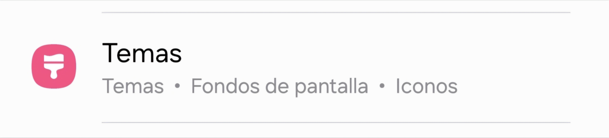

Temas, fondos de pantalla, iconos y paletas de colores
Temas
Para cambiar de tema en nuestro dispositivo tenemos 3 opciones, ir desde ajustes , desde el mismo menú principal y desde la misma aplicación Temas , entonces os enseñaré las tres y ya vosotr@s decicis que es más cómodo.
empezaremos desde Ajustes . Para ello nos vamos a ir a la aplicación Ajustes.
Una vez que estemos ya en los Ajustes, vamos a deslizar hacia abajo hasta que encontremos Temas y vamos a pulsar encima de la opción. (Como se muestra en la imágen*)

La otra opción (en mi opinión) es un poquito más rápida, solamente hay que situarse en la pantalla de inicio de vuestro dispositivo
Una vez ya situados, dejais pulsado la pantalla principal (en algún hueco en blanco)
veréis que de repente, en la parte posterior saldrán 4 opciones como muestra en la siguiente imagen:
Pues como en nuestro caso queremos cambiar el tema de nuestro dispositivo, le daremos al icono de Temas
Una vez dentro, veréis que será como una Play Store pero en vez de Aplicaciones, habrá mucha variedad de temas. Ahora es vuestro turno de ser creativos y buscar el tema mas guay!
Fondos de pantalla, iconos y más
Para cambiar el fondo de pantalla de nuestro dispositivo tenemos 2 opciones, ir desde ajustes o desde el mismo menú principal, entonces os enseñaré las dos y ya vosotr@s decicis que es más cómodo.
empezaremos desde ajustes . Para ello nos vamos a ir a la aplicación Ajustes.
Una vez que estemos ya en los Ajustes, vamos a deslizar hacia abajo hasta que encontremos Fondo de pantalla y estilo y vamos a pulsar encima de la opción. (Como se muestra en la imágen*)
Apareceremos en una pantalla igual o similar a esta:
Si os fijáis, contamos con 3 apartados; Cambiar fondos de pantalla, Paleta de colores y Atenuar fondo de pantalla... etc. Aquí es donde le puedes dar un toque más personal a tu terminal y ahora te enseñaré para que es cada cosa:
Cambiar fondos de pantalla: Aquí es donde seleccionamos nuestra foto para ponerla como fondo de inicio o bloqueo (o ambas)
Paleta de colores: Aquí es donde podemos tematizar nuestro terminal con la paleta de colores de nuestro fondo de pantalla (incluyendo los iconos*)
Atenuar fondo de pantalla:Lo único que hace es atenuar el fondo de pantalla cuando el modo oscuro esta activo.